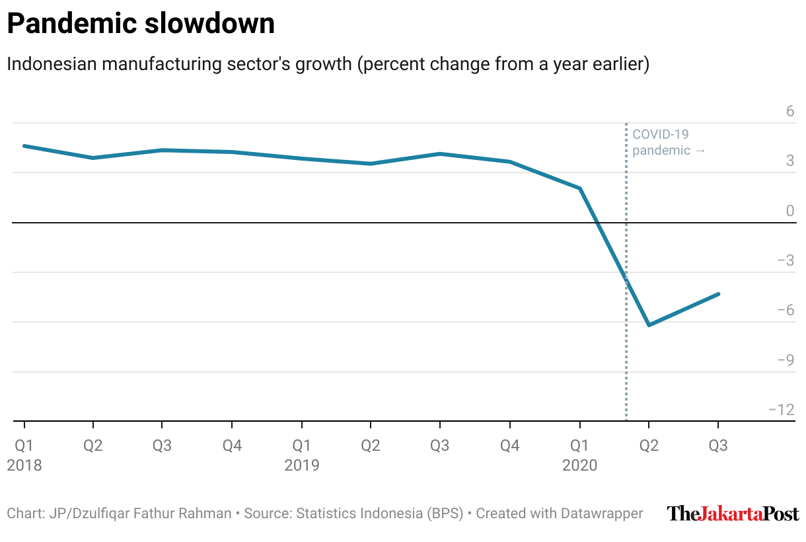

The jakpoststyle package makes it easy to customize Datawrapper charts (created with a free plan account) with the theme I usually use for The Jakarta Post. It builds on the DatawRappr package developed by Benedict Witzenberger.
The functions are as follow:
-
jp_dw_theme()edits the axes, byline and layout, as well as adds the Post’s logo;
-
jp_dw_scale_x()modifies the x-axis tick format and adds an axis line;
-
jp_dw_scale_y()modifies the y-axis elements, including truncating the scale; and
-
jp_dw_c19_annotation()creates COVID-19 text and line annotations.
Getting started
The jakpoststyle package works on an existing Datawrapper chart. It requires the DatawRappr package, which allows you to use the Datawrapper’s API through R.
# Load the packages
library(DatawRappr)
library(jakpoststyle)
# Apply the theme
jp_dw_theme(
chart_id,
author = "Dzulfiqar Fathur Rahman",
intro = "Indonesian manufacturing sector's growth (percent change from a year earlier)",
source_name = "Statistics Indonesia (BPS)",
source_url = "bps.go.id"
)
# Modify the y-axis
jp_dw_scale_y(
chart_id,
y_var = "growth",
max = 6,
min = "truncated",
num_ticks = 6
)
# Modify the x-axis
jp_dw_scale_x(
chart_id,
format = "quarterly",
axis_line = T
)
# Add COVID-19 annotations
jp_dw_c19_annotation(
chart_id,
y_position = 6
)

R Markdown template
The package comes with an R Markdown template that describes my typical workflow when creating Datawrapper charts through R.
rmarkdown::draft("my_project.Rmd", template = "jakpoststyle", package = "jakpoststyle")Note
The package is optimized for line and column charts. Optimization for other chart types will, hopefully, follow in the future.
Resources
The package mainly uses the dw_edit_chart() function from the DatawRappr package. You can also read Datawrapper’s API documentation.